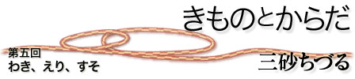

|  |
| 人間が最も汗をかくのは、わき、首の周り、そけい部あたり、であるらしい。たしかに、暑いとき、わきに汗がにじんでくるあの気持ち悪さは誰もがよく感じていると思う。 女性用のきものは、わき、えり、すそがあいている。通気性がよく、空気がさあっとぬけていくし、それこそ、「気」のとおりもよさそうである。「きものを着ている人は、夏でも案外涼しいよ、といっている」という話を聞いたことのある人は多いと思う。夏でもきものが涼しく感じることの一番の理由は、おそらくこのように、わき、えり、すそが開放されていることだろう。 わきがあいている、ということは本当に気持ちがよい。生まれてからずっと、洋服しか日常着にしたことがなかったので、このような、わきに布のない衣服がある、ということが想像できていなかった。わきの下にいつも布はあってあたりまえで、夏にノースリーブをきるとやっと、わきの下がすうすうと涼しい。それにしても、身頃の布はわきのすぐ下まできていて、密着しているからわきが開放されている、という感じにはならない。きものをきると、わきは完全にあいていて、周りに布がない。身八つ口（きものをきたとき、わきがあいているところ）から手をいれると、腕は二の腕まで、胴体は胸のほうまでさわることができるくらい、わきまわりに布がくっついていない。こんなに外気にさらされている状態で、冬は寒いのではないかと思ったが、普通、手は下ろしていることが多いので、冬でも寒いと感じることはなかった。むしろ、とても寒いときでも、暖房のきいている部屋だったり、人前でしゃべったりしなければならないときなどはやはりわきに汗をかくから、わきの下になにもないことは、とても気持ちがよい、と感じた。一番発汗するところが大きく開いている、という発想には、つくづく感心してしまう。きものをきていると、すくなくともわきにじっとりと汗をかく、という思いをすることがない。 わたしは今はきものを日常着にしているので、洋服を着ることは本当に少なくなっているが、やはり時と場合に応じて、スーツを着ることもある。最近スーツのジャケットを着ると、まずえりもとが気になってしょうがない。わたしはブラウスを着てジャケットを着るのが好きではなくて、できるだけ、えりのないシャツにジャケットやアクセサリーを合わせるほうが好きだ。だから、ジャケットを着ると、いきおい、ジャケットのえりがえりもとに密着する。首の後ろがすれて不快だし、第一、風が通っていかないので、えりから背中のほうまでなんとなくすっきりしない。こういうことは洋服で過ごしているときは当たり前で、気にもしていなかった。これは、おそらく、気にすることもできないような、鈍感な身体になっていたというだけのことだった、と今になれば思う。きものをきているえりもとは大きく開いていて、実にさわやかである。えりもとの通気性は、ゆるやかに着ている襦袢と肌の間をぬけて背中全体に通じている。帯をしめているところまでは、すうっと風が抜けていくようにできている。 きものには、もともと西洋式の下着は身に着けなかったものである。下半身に下着としてつけていたのはお腰だけで、股に布が直接当たるようなものはつけていなかった。西洋風の下着を身につけると、腰の上まで下着を上げなければならず、ウェストより下で帯の下側を締めているきもののスタイルでは、下着を上げ下げしにくいことこのうえない。また、きものの後姿に下着のラインがでるのも無粋である。すそから腰まで、布を巻きつけているだけで、足の内側から内腿、股まで、何も布はふれていない。実はこういうふうに布を巻いているだけの女性の衣装は世界中にたくさんあるようだ。東南アジアで多く使われている巻きスカートにも、もともと下着はつけなかったようだし、グァテマラなどの中南米のインディヘナの方たちも巻きスカートや何枚も重ね着したスカートの下に、「不潔になるから」股に布がふれるような西洋式下着はつけないのだという。腰から股にかけて、布が密着していないと、当たり前だが、実に通気性がよくさわやかである。最近、暑いさなかに、ジーンズをはいているひとをみると、「股が苦しそうで気の毒」と思ってしまう。きものはおそらく、下着をつけない限りにおいては、とても快適な衣服だったはずだ。そこで下着を着け始めると、きものの快適さは半減してしまう。日本の女性がきものを捨てた原因はいろいろあって、とても一言では言えないのだが、西洋式下着をつけはじめた、ということが一番大きかったのではないかと感じる。 きものは、一見とてもガードの固い、きっちりした衣服に見えるが、じつは結構無防備な衣服なのである。わたしの尊敬するご高齢の男性産婦人科医の方は、「女性がきものをきていたころは、脱がなくても何でもできたものなんだけど……」といたずらっぽく笑っておられた。男と女にとって、いまよりすこし楽しい時代だったかもしれない 三砂ちづる（みさご・ちづる） 疫学者 |